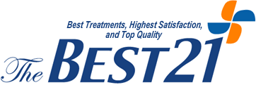

Overview
- Dedicating Ourselves to the Public Interests, Fulfilling Social Responsibilities, and Translating Patriotism into Action.
-
-
philanthropy
“Everybody is noble and equal.” Nothing can be put before the dignity of human beings. Gachon University Gil Medical Center has established hospitals and taken care of people in medically vulnerable areas because we wanted to carry on the spirit of philanthropy, pursuing happiness hand in hand.
-
service
“It is our joy to help those who are in need.” A beautiful mind to take care of the disadvantaged and to respect life beyond borders enables true service. Through sharing and considering others, Gachon University Gil Medical Center spreads love for the nation, society, and humankind; it also operates for public interests and “love for humanity”.
-
patriotism
“Through advanced research and treatment, we make contributions to national competitiveness.” The nation is the backbone of our well-being. We strongly believe that raising a professional workforce through continuous education can result to the better future of our nation. Therefore, Gachon University Gil Medical Center takes the lead in research and treatment for the future of Korea.
-
philanthropy
- By providing optimum treatment and research activities, we establish the highest-quality, the most reliable, and the most respectful hospital with a high level of patient satisfaction in the 21st century.
-

Core Value
- Respect of Lives
- Respect for life should be our priority
- Customer-oriented
- Customers are the reason behind our existence; we provide them the best medical service
- Social contribution
- We serve our society by translating love for people into action
- Advanced research
- We make contributions to life extension through researches
- Mutual respect
- We should respect each other, take great pride in ourselves, and have self-esteem
- Self innovation
- We maintain our competitiveness through incessant self-innovation